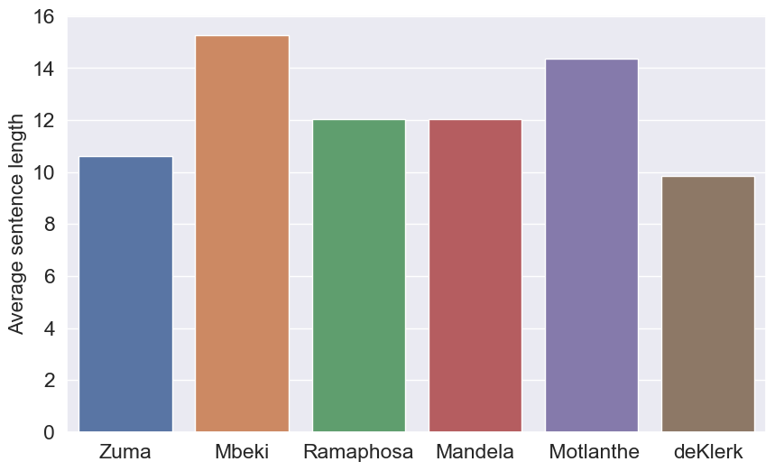

Who said that?
Abstract
This study analyses the intricate realm of authorship identification in South African presidential speeches, specifically those delivered during State of the Nation Addresses (SONA) spanning the period from 1994 to 2023. Employing a diverse array of machine learning (ML) techniques, including neural networks, gradient boosting trees, naive bayes, and the Electra Small language model, our research assesses the efficacy of each method in predicting authorship. Notably, the Feed-Forward Neural Network and Electra Small language model emerge as standout performers, excelling in their relative classification ability. However, this comparable performance between ELECTRA and the smaller ML models demonstrates the enduring importance of smaller ML models particularly in scenarios with limited computational resources. Their competitive accuracy, combined with a lower computational burden, positions the simpler ML models as pragmatic choices for real-time authorship text classification tasks.
Introduction
The study of presidential speeches has been a focal point of political analysis for decades, offering insights into the rhetoric, style, and policy priorities of various administrations. With the recent rise in popularity of machine learning (ML), and specifically Natural Language Processing (NLP), a new task has emerged: text classification. This paper performs the task of classifying sentences based on the South African presidents who said them. The aim is to compare the performance of large, transformer-based language models with smaller, more efficient models in this classification task.
The need for this work arises from the increasing prevalence and importance of computationally expensive transformers in fields such as NLP and computational linguistics. These models have shown remarkable performance in various tasks, including text generation, translation, question answering, and more (Naveed et al., 2023). However, their development and running costs, as well as their computational requirements, make them less accessible for many organizations (Hart et al., 2023). This creates a gap between what the scientific community currently has - powerful but expensive and resource-intensive models - and what it wants - equally effective models that are more efficient and accessible.
To address this need, we have conducted a comparison of a large language model (LLM) and smaller, ML models in the task of classifying sentences of South African presidents. We have explored both the theoretical underpinnings of these models and their practical performance in the classification task.
The remainder of this paper is structured as follows: we first provide a comprehensive background on the models used in NLP, discussing their mechanisms, strengths, and weaknesses. We then detail our methodology for comparing these models in the task of classifying presidential sentences. Following this, we present and discuss our results, offering insights into the performance of the models. Finally, we conclude with a reflection on the implications of our findings for the future development and use of language models in political analysis and beyond.
Literature review
Natural Language Processing (NLP) has been utilized extensively for diverse tasks. These tasks range from classification in healthcare [(Ong et al., 2010), (Fujita et al., 2012), (Ravindranath et al., 2017), (McKnight, 2012), (Wong & Akiyama, 2013), (Gerdes & Hardahl, 2013)], to predicting financial trends [(Wen et al., 2019), (Wu et al., 2012), (Al-Rubaiee et al., 2015), (Vijayan and Potey, 2016), (Nassirtoussi et al., 2015), (Nikfarjam et al., 2010)], to applications in corporate finance [(Guo et al., 2016), (Shahi et al., 2014), (Holton, 2009), (Chan and Franklin, 2011), (Humpherys et al., 2011), (Loughran and McDonald, 2011)] and the techniques and methodologies employed vary based on the specifics of the problem.
For example (Dogra et al., 2022) focusses on exploring cutting-edge learning models implemented on a language dataset. Amongst the models investigated are Naive Bayes models. Through a comprehensive review of this algorithm, the authors provide valuable insights into the nuances of text classification, shedding light on the strengths and limitations of the Naive Bayes method. (Dogra et al., 2022) also analyses data formatting techniques such as bag-of-words (BoW), Term Frequency - Inverse Document Frequency (TF-IDF), and word embeddings. BoW is most commonly used in document transformation, however suffers from high dimensionality, resulting in slow compute time. TF-IDF overcomes some weaknesses of BoW, as the text is represented with weighted frequencies, however still suffers from high dimensionality which slows a model’s rate of learning. Word embeddings allow for a reduced dimensional dataset to be analysed by representing each sentence by a vector of fixed size, where each unique word is a unique integer, dependent on the word and its context.
In 2019, (Devlin et al., 2019) developed the language model known as BERT which borrowed the Encoder from the previously created Transformer architecture (Vaswani et al., 2017). Although upon its release BERT set new standards for numerous NLP related performance metrics, it does have its shortcomings. Due to the nature of BERT’s training approach being one of masking a fraction of the input tokens and asking the model to predict the token being masked, it doesn’t efficiently utilize all of it’s data, with predictions being made on only 15% of the tokens in each batch (Devlin et al., 2019). (Clark et al., 2020) developed ELECTRA to handle just this problem. Instead of training a model to predict the original identity of a corrupted token, ELECTRA is a discriminator trained to predict whether each token in the corrupted input was replaced by a generator sample or not. This approach to training is shown to be more efficient than the Masked Language Model approach to training because the task is performed on all input tokens, as oppose to just a select few, and it resulted in ELECTRA achieving a better General Language Understanding Evaluation (GLUE) score than BERT.
Methods
Data preprocessing
To get the data into a format compliant with the chosen language models, numerous cleaning operations had to be performed. Firstly, to identify the presidents associated with each speech, a regular expression pattern was defined. This pattern extracted the president’s name from the document names, which are named after the president which delivered the speech contained in the text document. A tabular data structure was then initialized with two columns: ‘Completion’ and ‘Prompt’. This DataFrame serves as the container for organizing the processed data. For each data file, the content is read in while disregarding the initial two lines, which contains the date and an empty line. The content is stored as a list of lines. These lines are then concatenated into a single text document, before being stripped of symbols, such as ‘’. The full text is then tokenized into sentences, with the name of the president inserted into the ‘completion’ column next to each sentence. Stop words where then removed too, which reduces the amount of unnessecary data. This resulted in a dataset with 9337 sentences, and served as a starting point for 3 other datasets to be formed.
Bag of Words (BoW)
BoW (Harris, 1954) is a data manipulating technique which has a variety of use cases, such as in Image Classification, Text Classification and Visual Scene Classification (Qader et al., 2019). In the context of visual scene classification, the BoW approach allows for clusters of local descriptors to be extracted from the images, where the order of the clusters is not important. In the domain of text classification, which is the field of this study, the BoW methodology entails counting the number of occurrences associated with each word within a given sentence, while disregarding the inherent word order and grammatical structure. The fundamental concept underlying BoW is the generation of a histogram, capturing the frequency distribution of words within textual documents or the prevalence of features within images, thereby creating a representative profile for the respective sentence or image which attempt to capture the key aspects. Notably, the BoW technique is characterized by its computational simplicity, rendering it more accessible and conceptually straightforward than many alternative classification methodologies (Qader et al., 2019). Consequently, BoW-based systems have demonstrated the potential to achieve improved performance metrics on widely accepted benchmarks for evaluating text and image classification algorithms.
In order to transform our dataframe consisting of a ‘completion’ and ‘prompt’ column into a BoW dataset, 3 steps need to be followed. Firstly, Text Tokenization needs to occur, which involves the segmentation of input text into individual words or terms, commonly referred to as tokens. Then a vocabulary has to be formed which is a dictionary comprising of all the distinct words (tokens) identified within the text corpus. Each of these unique words is associated with a specific integer index. Finally, Token Frequency Counting must occur. At this stage, the number of occurrences of each word (token) within every sentence present in the text corpus must be counted. The outcome is a matrix where each row corresponds to a sentence, and each column corresponds to a unique word from the vocabulary. The entries in this matrix reflect the frequency (count) of each word within each sentence. Thus, if the matrix is called \(D\), entry \(D_{i,j}\) is the number of times word \(j\) appeared in sentence \(i\). These 3 steps are easily performed using sklearn (Buitinck et al., 2013) and more specifically the CountVectorizer() and fit_transform() functions.
Term Frequency - Inverse Document Frequency (TF-IDF)
TF-IDF (Luhn, 1957) is a numerical statistic used in text mining and information retrieval in order to reflect how important a word is in a document in a collection or corpus based on two factors. The TF-IDF value increases proportionally to the number of times a word appears in the document and it decreases based on the number of documents in the corpus that contain the word. This helps to offset the frequency bias which would declare commonly used words as more important than smaller ones. TF-IDF is thus composed of two terms, Term Frequency (TF) and Inverse Document Frequency (IDF). TF measures the frequency of a word in a document, thus if a word appears more often in a document, its TF value increases according to the following formula:
\[ \text{TF(t)} = \frac{\text{Number of times term t appears in a document}}{\text{Total number of terms in the document}} \]
IDF measures the importance of a word across a set of sentences, in our case, but can be documents in other cases. If a word appears in many sentences, it’s not a unique identifier of that sentence, therefore its IDF value decreases. The IDF of a word \(t\) can be calculated as follows:
\[ \text{IDF(t)} = ln \left( \frac{\text{Total number of sentences}}{\text{Number of sentences with term t in it}}\right ) \]
The TF-IDF value of a word in a particular sentence is the product of its TF and IDF values, thus: \[ \text{TF-IDF(t)} = \text{TF(t)} \times \text{IDF(t)} \]
This value is thus larger for words that are more unique to a sentence, and lower for words that are common across many sentences.
A key difference between the BoW model and TF-IDF is that BoW can be seen to suffer from frequency bias as it does not consider the uniqueness of words to a sentence, but rather places importance based on frequency. Thus common words in our case like ‘Government’ and ‘Country’ will be valued highly simply because they are used often. However, in the TF-IDF approach these words will have low scores as they appear in many documents, and therefore are not unique or informative.
In order to convert our dataset of a ‘completion’ and ‘prompt’ column into a TF-IDF dataset, similar steps shown above must be followed. Again, tokenization must first occur, where input text is decomposed into discrete words (tokens). This process partitions the text into individual words or terms, making it amenable to further work. Following tokenization, a dictionary containing all distinct words (tokens) encountered within the text corpus must be built. Each unique token within this vocabulary is assigned a unique integer index for identification. Then TF-IDF Transformation occurs. This diverges from the conventional token counting approach, as the TF, IDF, and then TF-IDF values for each token within every sentence is calculated. The outcome of this process is a TF-IDF matrix. Similarly to the BoW matrix, each row within the matrix corresponds to an individual sentence, while each column corresponds to a unique token derived from the vocabulary. The matrix entries however signify the computed TF-IDF values for each token within each document, encapsulating the importance and discriminatory potential of each term. Once again, this process is largely simplified by utilizing the sklearn package and more specifically the TfidfVectorizer() and fit_transform() functions.
Word Embeddings
State-of-the-art word embeddings are a vector representation that can allow words with similar meaning to have a similar representation. They are a distributed, numeric representation of text that is perhaps one of the key reasons for the impressive performance of deep learning methods on challenging NLP problems (Mikolov et al., 2013). Trained Word embedding networks map words in a vocabulary into a vector space, where the position of each word is learned from text data and is based on the context in which it is used. Thus typically, the position of a word within the learned vector space is referred to as its embedding. Word embeddings differ from BoW or TF-IDF datasets in several key ways. Firstly, word embeddings can capture much more complex constructs, like the semantic meaning of words. Words are thus defined by the surrounding words, which encourages the model to learn context. BoW and TF-IDF on the other hand disregard word order and context. Word embeddings can also have much lower dimensionality, which can reduce the compute time far greater than is the case with BoW and TF-IDF.
However, for this study, a simple frequency based word embedding system is used which gives values to words based soley on the frequency of their occurence. In order to transform our dataset of a ‘completion’ and ‘prompt’ column into a word embedded dataset, 4 steps need to be followed. Firstly, an upper bound of 1000 unique words is set to restrict the number of words used in the embedding. This is done to increase efficiency. Each unique word in the text corpus needs to then be ranked in descending order of frequency, thus with the most frequently used word given a value of 1, and the second most frequently used word given a value of 2, etc. Then each sentence in the dataset should be iterated through, converting each word to the corresponding number in the frequency based ranking, while removing words entirely if they do not appear within the top 1000 most frequently used words. Finally, to ensure each sentence is embedded as a vector of the equal length, an upper bound of 50 was chosen such that vectors of length less than 50 were padded with zeros, and vectors of length over 50 were truncated to the first 50 integers.
EDA
The dataset is comprised of 36 speeches made by South African presidents Zuma, Mbeki, Ramaphosa, Mandela, Motlanthe, and de Klerk, from the years 1994 to 2023. The barplot below displays the number of sentences spoken by each president. Significant variation in the number of sentences associated with each president can be seen. Notably, Jacob Zuma had the highest number of sentences attributed to him, totaling 2,629 sentences. Thabo Mbeki followed closely with 2,397 sentences, while Cyril Ramaphosa had 2,279 sentences. Nelson Mandela had 1,671 sentences in the dataset. Motlanthe and F.W. de Klerk had relatively fewer sentences, with 264 and 97 sentences, respectively. From this we can see that we expect the models to struggle to classify Motlanthe and de Klerk sentences correctly, since their respective datasets are so small.

Figure 2 shows the varying sentence lengths among presidents, with President Mbeki having the longest average sentence length at approximately 15 words per sentence, and President de Klerk having the shortest at about 10 words per sentence. This variability may indicate differences in communication styles, speech contexts, or historical periods.
The word clouds below shows the most frequently used words by each president. Interestingly, de Klerk is the only president who regularly used the words “constitution” and “constitutional”, which could be due to him being involved in the negotiation of the new constitution in South Africa. Other commonly used words which further suggest this narrative include “right”, “amendment” and “Freedom Alliance”. “South Africa”, “Goverment” and “country” are some of the other more popular words used by the presidents, as can be seen in Mandela’s wordcloud. Interestingly, before removing the stopwords, “will” was a very popular word used by the presidents which highlights the alure of promises about the future often made by leaders.
With the comprehensive description and analysis of the data completed, we can now delve into the intricate details of the models developed for this classification task.
Modelling
Feed-forward Neural Networks
Feed-forward Neural networks are a subset of machine learning algorithms modeled after the human brain (Lim & Sung, 1970). They are composed of interconnected nodes or “neurons” that process information using a system of weights and bias values. These weights and bias values are adjusted during the training process to minimize the difference between the network’s predicted output and the actual observed value. This updating of weights occurs through a process known as backpropagation. The advantage of neural networks is their ability to identify complex patterns and relationships in data, making them especially useful for tasks such as image recognition, natural language processing, and predictive modeling.
To optimize the performance of the Feed-forward Neural Network, a systematic exploration was undertaken. This involved conducting a grid search, wherein various configurations were evaluated. Specifically, we focused on 3 critical aspects of the network architecture: the number of hidden layers, the number of neurons within each layer, and the L2-regularization value applied. Our initial exploration encompassed three distinct network architectures. First, a model with two hidden layers was examined, followed by one with three hidden layers and finally a model with four hidden layers. The selection of the ultimate network architecture was based on the examination of the validation accuracy. Having determined the optimal architecture, we further refined our model through the application of L2-regularization. In particular, we applied a range of L2-regularization values from 0.01 to 0.1, with the intent of identifying the value that yielded the highest validation accuracy in the selected model. This approach was replicated for each of the datasets, namely BoW, TF-IDF, and word embeddings.
Boosted Trees
Boosted trees are an ensemble of, generally, weak learners, which are sequentially trained on the errors made by their predecessors. This iterative process involves assigning weights to training data points, emphasizing the samples that are consistently misclassified. The subsequent trees are then tailored to rectify these misclassifications, incrementally improving predictive accuracy over a large number of learners. CatBoost, as introduced by (Prokhorenkova et al., 2019), distinguishes itself from the other gradient boosting algorithms such as XGBoost and LightGBM through its unique approach to tree construction. Unlike its counterparts, CatBoost constructs balanced trees that exhibit a symmetrical structure. This implies that the feature-split pair which minimizes the loss function is uniformly selected and applied to all nodes within the same level of the tree.
In the pursuit of optimizing the hyperparameters of the CatBoost algorithm, a grid search was conducted. The grid search was performed across a comprehensive parameter space including the parameters iterations, learning_rate, depth, and l2_leaf_reg. iterations determines the number of boosting iterations during the training process. learning_rate governs the step size at each iteration while moving towards a minimum of the loss function, while depth defines the maximum depth of the decision tree. Finally, l2_leaf_reg contributes to controlling overfitting by penalizing the magnitude of the weights. For each combination of these parameters, the CatBoost algorithm was trained and validated, and the model’s performance was assessed through the accuracy of the model on the validation set. The overarching objective was to identify the hyperparameter configuration that yielded the optimal model performance, as indicated by the validation accuracy.
Naive Bayes
The Naive Bayes algorithm is a classification technique based on Bayes’ Theorem, which describes the probability of an event based on prior knowledge of conditions that might be related to the event (Dogra et al., 2022). The algorithm is labeled “naive” because it assumes that all features in a dataset are mutually independent. Despite this oversimplification, Naive Bayes can be remarkably accurate, fast, and efficient, particularly with large datasets and it is widely used in text classification.
In order to optimise the Naive Bayes algorithm, the single alpha parameter was chosen such that the validation accuracy was once again maximised. alpha is instrumental in preventing zero proabilities occuring with words that are not found in all datasets, thus alpha being set to zero can greatly reduce the performance of the model. alpha is generally set to 1, also known as Laplace smoothing, however optimal values depend on the dataset.
ELECTRA
The ELECTRA (Efficiently Learning an Encoder that Classifies Token Replacements Accurately)(Clark et al., 2020) model introduces a novel approach to pre-training in the domain of NLP. While traditional pre-training methods like BERT rely on Masked Language Modeling (MLM), where input tokens are partially obscured by replacing them with a special token ([MASK]) and the model is trained to predict the original tokens, ELECTRA takes a more data-efficient route. ELECTRA replaces select tokens in the input text with plausible alternatives drawn from a generator network. Thus rather than training a model to predict the original identities of the corrupted tokens, ELECTRA trains a discriminative model, like the one found in a Generative Adverserial Network (GAN) (Goodfellow et al., 2014). The Discriminative model’s task is thus to determine whether each token in the corrupted input was replaced by a sample generated from the network or if it is the original, unchanged token.
Model diagnostics
Numerous model evaluation scores were consulted during the modelling process which allowed for the relative and absolute competence of the models to be seen. Amongst the metrics investigated, is the training accuracy, which shows the ability of the model to learn from the training set, however cannot be taken as absolute model performance. For this, the out-of-sample, test set accuracy, which measures the proportion of sentences correctly attriuted to a president, must be consulted. This provides a stong indicication for the models performance as it is performed on unseen data. Precision, which measures the proportion of true positive predictions for each class among all positive predictions for that class was also consulted. This allows for a more indepth understanding of how the model performs on each class.
\[ \text{Precision}= \frac{\text{True Positives for Class}}{\text{True Positives for Class} + \text{False Positives for Class}} \]
Another class specific metric is recall, which measures the proportion of true positive predictions for each class among all actual instances of that class.
\[ \text{Recall}= \frac{\text{True Positives for Class}}{\text{True Positives for Class} + \text{False Negatives for Class}} \]
The final metric consulted is the F1-score for each class and is the harmonic mean of precision and recall for that class. It balances precision and recall and since our classes are imbalanced, it is a suitable, all-encompassing metric for model performance (Seo et al., 2021).
\[ \text{F1-Score}= 2\times \frac{\text{Preicision}\times \text{Recall}}{\text{Precision} + \text{Recall}} \]
Results
The table below illustrates the test set accuracy for various machine learning models across the different datasets. Notably, we observe variations in accuracy across models and data sources, which highlight the influence of both the model architecture and the data representation technique. The highest test set accuracy is achieved with the Neural Network on the TF-IDF, with a score of 59.7%, while the Naive Bayes model performs second best also on the TF-IDF dataset with a score of 59%. The Boosted Tree performs best on the Frequency embeddings with a score of 34.8%.
| Model | BoW | TF-IDF | Frequency Embeddings | ELECTRA Embeddings |
|---|---|---|---|---|
| Neural Net | 0.567 | 0.597 | 0.343 | |
| Boosted Tree | 0.549 | 0.555 | 0.348 | |
| Naive Bayes | 0.580 | 0.590 | 0.300 | |
| ELECTRA | 0.580 |
The table below displays F1-scores for all models, across the datasets, and for each category. The Naive Bayes model achieves the highest F1-score with a value of 0.65 for both Ramaphosa and Zuma, both while using the TF-IDF dataset. Several zero F1-scores are also present for the scarce categories of Motlanthe and deKlerk, with an F1-score of 0 being achieved by both the Neural Net and the CatBoost algorithm when the word embeddings dataset was used, as well as for the ELECTRA model.
| Model Type | Dataset | Motlanthe | Mandela | Mbeki | Ramaphosa | Zuma | deKlerk |
|---|---|---|---|---|---|---|---|
| Neural Net | BoW | 0.098 | 0.442 | 0.551 | 0.606 | 0.612 | 0.615 |
| TF-IDF | 0.045 | 0.481 | 0.572 | 0.647 | 0.615 | 0.583 | |
| Frequency Embeddings | 0.0 | 0.042 | 0.219 | 0.112 | 0.432 | 0.0 | |
| CatBoost | BoW | 0.044 | 0.465 | 0.532 | 0.583 | 0.612 | 0.381 |
| TF-IDF | 0.047 | 0.493 | 0.545 | 0.581 | 0.612 | 0.3 | |
| Frequency Embeddings | 0.0 | 0.008 | 0.39 | 0.235 | 0.453 | 0.0 | |
| Naive Bayes | BoW | 0.06 | 0.46 | 0.58 | 0.65 | 0.62 | 0.08 |
| TF-IDF | 0.04 | 0.5 | 0.6 | 0.65 | 0.65 | 0.0 | |
| Frequency Embeddings | 0.02 | 0.11 | 0.31 | 0.18 | 0.47 | 0.01 | |
| ELECTRA | ELECTRA Embeddings | 0 | 0.47 | 0.54 | 0.62 | 0.61 | 0 |
Discussion
The accuracy table provides valuable insights into the performance of different machine learning models across multiple data sources. Noteworthy observations include the relatively high accuracy achieved by the Neural Network and Boosted Tree models when applied to TF-IDF data, underscoring the suitability of this data representation for these models. In contrast, the Naive Bayes model excels with BoW data, achieving the second highest test set accuracy score on this data. Additionally, the introduction of ELECTRA Embeddings used in the ELECTRA model, demonstrates competitive accuracy, suggesting the effectiveness of pre-trained embeddings in capturing complex patterns within the data. However, the fact that these fine-tuned state-of-the-art embeddings have not lead to drastically better performance in the test set highlights key insights into these models. Whether the underwhelming performance by ELECTRA is due to the lack of data (as transformers are notoriously slow to learn), or the complexity of the data, remains unknown. However, the equally competitive scores achieved by far simpler machine learning models is a good sign of the ability of simpler cost effective models to compete with an LLM such as ELECTRA.
In Table 2 showing F1-scores for the models, several noteworthy observations can be made. Firstly, amongst the simpler models, they all exhibit greater F1-scores over the BoW and TF-IDF datasets when compared to the word embeddings dataset, highlighting that the Data Representation certainly matters. As mentioned in the Methodology section, this is likely due to the primitive embedding system used in this section, which leads to a dataset with a far lesser dimensionality, as well as representations for words which do not represent meaning apart from relative frequency of use. As was seen in the accuracy table discussed above, the TF-IDF dataset appears to be the favoured dataset as well, followed by BoW. ELECTRA and ELECTRA Embeddings once again demonstrate competitive F1-scores. This further suggests the effectiveness of fine tuning pre-trained embeddings in capturing complex patterns within the data. The comparable scores achieved by the simpler machine learning models once again raises questions about the efficacy of LLMs such as ELECTRA when the data is not abundant. The fact that simpler machine learning models, such as “Naive Bayes” and “CatBoost,” achieve competitive F1-scores when compared to a complex language model like ELECTRA, underscores the effectiveness of simpler, cost-effective models in text classification tasks. This observation highlights the potential of simpler models to compete with LLMs like ELECTRA in the absence of extensive training data, in classification tasks.
Conclusion
This study analyses the performance of various machine learning models within the realm of text classification. We present a comprehensive analysis of accuracy and F1-scores, offering a deep understanding of each model’s strengths and limitations. Notably, in scenarios with limited data, simpler models such as Boosted Trees, Feed-Forward Neural Networks, and Naive Bayes demonstrate performances comparable with ELECTRA. Additionally, our exploration introduces ELECTRA Embeddings through the ELECTRA model, revealing strong accuracy and emphasizing the significance of pre-trained embeddings in capturing intricate data patterns.
These findings hold substantial implications for practical applications. Researchers and practitioners can leverage this analysis to make informed choices regarding model selection and data representation for specific text classification tasks. Furthermore, this study reinforces the idea that complex language models, while potent, may not consistently outperform simpler alternatives, especially when data is scarce.
While this research provides valuable insights, further investigations on balanced datasets with increased observations are warranted. This approach would allow us to fully assess the potential of LLMs, particularly when a large enough dataset is available, which could warrrant the large number of parameters available in an LLM.
Our results underscore the effectiveness of both simpler models and pre-trained embeddings, emphasizing the nuanced interplay between data representation and model performance. As the landscape of text classification tasks evolves, our research offers guidance in selecting the right models and data representations for achieving optimal, efficient outcomes.
Appendix
Bibliography
AL-Rubaiee H, Qiu R, Li D (2015). Analysis of the relationship between Saudi twitter posts and the Saudi stock market. In: 2015 IEEE seventh international conference on intelligent computing and information systems (ICICIS). Available at: https://doi.org/10.1109/intelcis.2015.7397193 (Accessed: 07 October 2023).
Buitinck, L. et al., 2013. API design for machine learning software: experiences from the scikit-learn project. In ECML PKDD Workshop: Languages for Data Mining and Machine Learning. pp. 108–122.
Chan SWK, Franklin J (2011). A text-based decision support system for financial sequence prediction. Decis Support Syst 52(1):189–198. Available at: https://www.sciencedirect.com/science/article/pii/S0167923611001230 (Accessed: 07 October 2023).
Clark, K. et al. (2020) Electra: Pre-training text encoders as discriminators rather than generators, arXiv.org. Available at: https://arxiv.org/abs/2003.10555 (Accessed: 08 October 2023).
Devlin, J. et al. (2019) Bert: Pre-training of deep bidirectional Transformers for language understanding, arXiv.org. Available at: https://arxiv.org/abs/1810.04805 (Accessed: 08 October 2023).
Dogra, V. et al. (2022) A complete process of text classification system using state-of-the-art NLP models, Computational intelligence and neuroscience. Available at: https://www.ncbi.nlm.nih.gov/pmc/articles/PMC9203176/ (Accessed: 05 October 2023).
Gerdes, L. and Hardahl, C. (2013) Text mining electronic health records to identify hospital adverse events, Studies in health technology and informatics. Available at: https://pubmed.ncbi.nlm.nih.gov/23920919/ (Accessed: 07 October 2023).
Goodfellow, I.J. et al. (2014) Generative Adversarial Networks, arXiv.org. Available at: https://arxiv.org/abs/1406.2661 (Accessed: 11 October 2023).
Guo L, Shi F, Tu J (2016). Textual analysis and machine learning: crack unstructured data in finance and accounting. J Finance Data Sci 2(3):153–170. Available at: https://www.sciencedirect.com/science/article/pii/S2405918816300496 (Accessed: 07 October 2023).
Hart, S. et al. (2023) Organizational preparedness for the use of large language models in pathology informatics, Journal of Pathology Informatics. Available at: https://www.sciencedirect.com/science/article/pii/S2153353923001529 (Accessed: 08 October 2023).
Harris, Z.S. (1954) Distributional structure zellig S. harris - taylor & francis online. Available at: https://www.tandfonline.com/doi/pdf/10.1080/00437956.1954.11659520 (Accessed: 09 October 2023).
Holton C (2009). Identifying disgruntled employee systems fraud risk through text mining: a simple solution for a multi-billion dollar problem. Decis Support Syst 46(4):853–864. Available at: https://www.sciencedirect.com/science/article/pii/S0167923608002078 (Accessed: 07 October 2023).
Humpherys SL, Moffitt KC, Burns MB, Burgoon JK, Felix WF (2011). Identification of fraudulent financial statements using linguistic credibility analysis. Decis Support Syst 50(3):585–594. Available at: https://www.sciencedirect.com/science/article/pii/S0167923610001338 (Accessed: 07 October 2023).
Loughran T, Mcdonald B (2011). When is a liability not a liability? Textual analysis, dictionaries, and 10-Ks. J Finance 66(1):35–65. Available at: https://www.sciencedirect.com/science/article/pii/S0167923610001338 (Accessed: 07 October 2023).
Luo, X. and AbstractText classification (TC) is an approach used for the classification of any kind of documents for the target category or out. In this paper (2021) Efficient English text classification using selected Machine Learning Techniques, Alexandria Engineering Journal. Available at: https://www.sciencedirect.com/science/article/pii/S1110016821000806 (Accessed: 05 October 2023).
McKnight. (2012) Semi-supervised classification of Patient Safety Event Reports, Journal of patient safety. Available at: https://pubmed.ncbi.nlm.nih.gov/22543364/ (Accessed: 07 October 2023).
Mikolov, T. et al. (2013) Efficient estimation of word representations in vector space, arXiv.org. Available at: https://arxiv.org/abs/1301.3781 (Accessed: 09 October 2023).
Nassirtoussi AK, Aghabozorgi S, Wah TY, Ngo DC (2015). Text mining of news-headlines for FOREX market prediction: A Multi-layer Dimension Reduction Algorithm with semantics and sentiment. Expert Syst Appl 42(1):306–324. https://doi.org/10.1016/j.eswa.2014.08.004 (Accessed: 07 October 2023).
Nikfarjam A, Emadzadeh E, Muthaiyah S (2010). Text mining approaches for stock market prediction. In: 2010 the 2nd international conference on computer and automation engineering (ICCAE). Available at: https://doi.org/10.1109/iccae.2010.5451705 (Accessed: 07 October 2023).
Ong, M.-S., Magrabi, F. and Coiera, E. (2010) Automated categorisation of Clinical Incident Reports Using Statistical Text Classification, BMJ Quality & Safety. Available at: https://qualitysafety.bmj.com/content/19/6/e55 (Accessed: 07 October 2023).
Qader, W.A., Ameen, M.M. and Ahmed, B.I. (2019) An overview of bag of words; importance, implementation, applications, and Challenges. Available at: https://www.researchgate.net/publication/338511771_An_Overview_of_Bag_of_WordsImportance_Implementation_Applications_and_Challenges (Accessed: 09 October 2023).
Ravindranath, P. et al. (2017) Machine learning in Automated Classification of adverse events in clinical